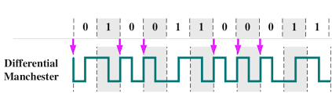

El código Manchester diferencial es una variante del código Manchester que mejora su robustez frente a errores de polaridad. Stallings señala que esta técnica es especialmente útil en entornos ruidosos.
En este esquema, la información se representa por la presencia o ausencia de una transición al inicio del intervalo de bit, mientras que siempre existe una transición en la mitad del intervalo para sincronización. Tanenbaum explica que esta característica hace que el código sea insensible a inversiones de señal. Forouzan destaca su uso en redes Token Ring.

En conclusión, Manchester diferencial combina buena sincronización con mayor robustez frente a errores físicos del canal.